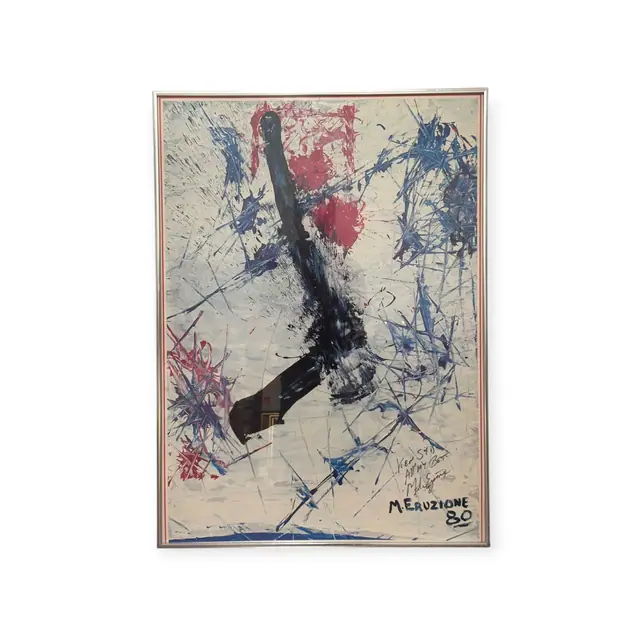
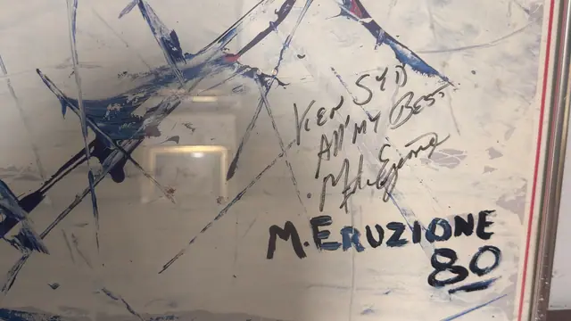
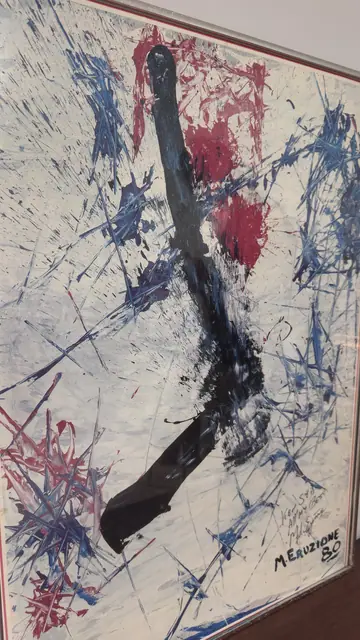
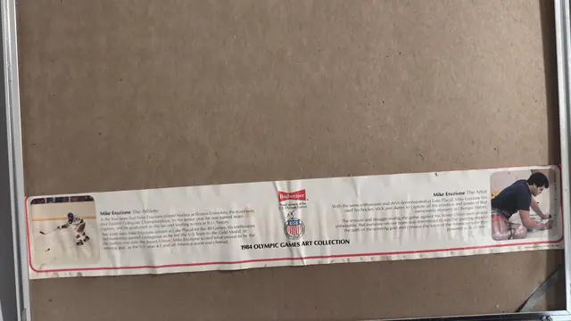

Paintings & Prints
Mike Eruzione 1984 Olympic Art Collection Print, Signed, Framed, 1984
Mike Eruzione · 1984
Price Upon Request




About the Item
Mike Eruzione. A near-white field is slashed with blue skate-blade strokes and spatter, a broad crimson smear at the upper left, and one thick black sweep curving down the centre like a stick blade in motion. The marks are gestural and violent, in the manner of action painting, with dozens of thin scored lines crossing the surface. Below the marks, painted in heavy black, is the printed inscription M. ERUZIONE 80, and above it a personal dedication has been added in black marker. Medium: offset lithograph print on paper. Signed upper right of the image; printed name at right and a hand-written marker dedication above it, reading "M. ERUZIONE 80". Inscribed on the reverse or mount: Ken S[illegible] / All my Best / M. Eruzione (hand-written in marker); M. ERUZIONE 80; 1984 OLYMPIC GAMES ART COLLECTION; Budweiser - Proud Sponsor of the U.S. Olympic Games. Condition: The paper label on the back is creased and wrinkled; the sheet itself shows no tears; heavy glare and reflections through the glass.
Details
- Creator:
- Mike Eruzione
- Creation Year:
- 1984
- Dimensions:
- Height: 33.25 in (84.45 cm)
Width: 24.25 in (61.59 cm)
outside of frame - Medium:
- offset lithograph print on paper
- Period:
- 20Th
- Condition:
- Offered in the condition shown in the photographs.
- Reference Number:
- VO-104
- Documentation:
- A printed descriptive label from the 1984 Olympic Games Art Collection is taped to the backing board; it is biographical, not a certificate of authenticity
- Gallery Location:
- Ken S[illegible] / All my Best / M. Eruzione (hand-written in marker); M. ERUZIONE 80; 1984 OLYMPIC GAMES ART COLLECTION